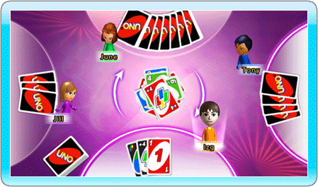

21 |
ゲームプレイの概略 |
 |
各プレイヤーにカードが7枚配られ、残ったカードは テーブル左下に下向きに置かれ、山札となります。 山札の一番上のカードは表向きに置かれ、 場札となります。 最初に順番が回ってきたプレイヤーは、場札にあるカードと同じ数字または色、マーク（ドロー２、 リバース、スキップ）を持つカードを出すことが できます。最初のプレイヤーの出したカードは場札の一番上に置かれ、次の番のプレイヤーはその カードに合ったカードを出さなくてはなりません。 例えば、カードが配られた後に赤の3のカードが 場札に出ている場合、最初の順番が回ってきた プレイヤーは赤のカード、または3の数字がある他の色のカードを出すことができます。また、ワイルドカード、ワイルドドロー４カードを出すこともできます。 最初に表に出されたカードが特殊カードだった 場合、ゲームは次のように進行します。 ワイルドドロー４ このカードはデッキの一番後ろに置かれ、山札から さらに1枚カードが引かれます。 ワイルド 最初の順番が回ってきたプレイヤーは場の色を 自由に宣言することができ、その後カードを 捨てます。 ドロー２ 最初の順番が回ってきたプレイヤーはカードを2枚 引き、順番は次のプレイヤーに移行します。 リバース 最初の順番が回ってきたプレイヤーがカードを 捨て、ゲームは左回りに進行します。 スキップ 最初の順番が回ってきたプレイヤーは順番が 「スキップ」され、その次のプレイヤーから ゲームが進行します。 ワイルドまたはワイルドドロー４はいつでも捨てることができます。プレイヤーが手札に捨てることのできるカードを持っていない場合、その プレイヤーは山札からカードを1枚引く必要が あります。引いたカードが場に捨てられるカードであった場合、ドロータイプが1か3ならば、その カードをそのまま捨てることができます。ドロー タイプが2ならば、カードを1枚引いて、次の プレイヤーに番が移行します。 特殊カードは、ゲームの進行方向を逆にしたり、 次のプレイヤーの順番をスキップさせたり、山札 から強制的にカードを引かせるなどの効果により、 ゲーム展開を盛り上げる効果があります。 カードは一目でその効果が理解できるように 表示されているため、数回ゲームをプレイすれば 誰でも一人前のプレイヤーになることができます。さらにプレイ回数を重ね、様々なデッキの可能性や戦略性を発見するにつれ、ゲームの楽しみ方が さらに広がっていくことでしょう。  |
 |
 |
 |